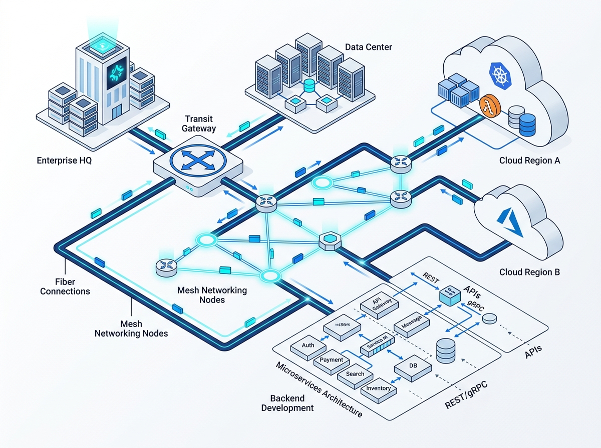

Networking & Development
Design high-throughput, low-latency network backbones and build tailored software services that integrate complex enterprise systems. We bridge disparate environments with secure transit gateways, SD-WAN, and scalable custom microservice APIs.

Core Engineering Capabilities
Hybrid Cloud & Transit Networking
VPC/VNet topology design, AWS Transit Gateway routing tables, Direct Connect / ExpressRoute dedicated physical circuits, and site-to-site IPsec VPN failovers.
Zero-Trust Network Access & VPNs
Eliminating perimeter-only defense. We deploy modern identity-aware proxies (Cloudflare Access, Tailscale, WireGuard) to govern resource access by user context.
Custom Backend APIs & Microservices
High-throughput internal services built in Go, Node.js, Python, or Rust. Designed with clean contract definitions, connection pooling, and resilient retry logic.
Load Balancing & Traffic Engineering
Layer-4 / Layer-7 Application Load Balancers, geo-based DNS routing (Route 53), CDN edge acceleration, and automated SSL/TLS certificate lifecycles.
Core Deliverables
- Topology Blueprint & IaC: Fully automated Terraform/OpenTofu definitions for all subnets, CIDR allocations, route tables, and NAT gateways.
- High-Performance Microservices: Production-ready containerized microservices equipped with health probes, logging, and automated CI test suites.
- Perimeter Security & Firewalls: Integrated WAF rules, rate-limiting policies, DDoS protection layers, and flow log inspection pipelines.
- Network Runbooks & Diagnostics: Troubleshooting checklists, packet trace runbooks, and latency monitoring dashboards.